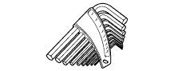

ДАТЧИК ОТСТОЙНИКА ТОПЛИВА > ПРОВЕРКА > Подготовка

| Контейнер | - |
| Латунная щетка | - |
| Индикатор часового типа с магнитной подставкой | - |
| Ручной испытательный прибор для топливной форсунки | - |
| Плоскогубцы | - |
| Динамометрический ключ | - |
| Деревянный пруток | - |
|  | 09013-7C400 | Набор ключей | - |
 | 09017-1C130 | Разрезная головка 17 мм | - |
 | 09082-00040 | Электрический диагностический прибор TOYOTA | - |
 | (09083-00150) | Комплект проводов для диагностического прибора | - |